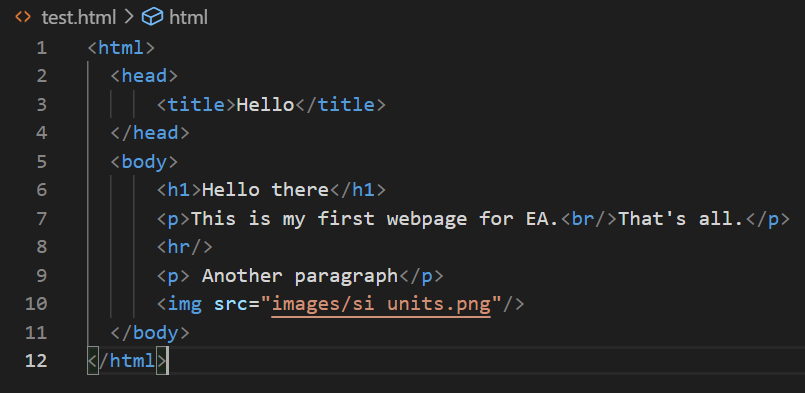
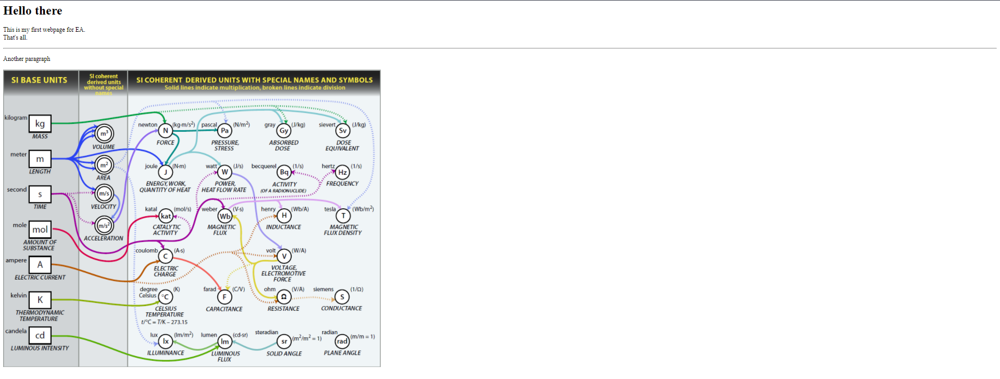
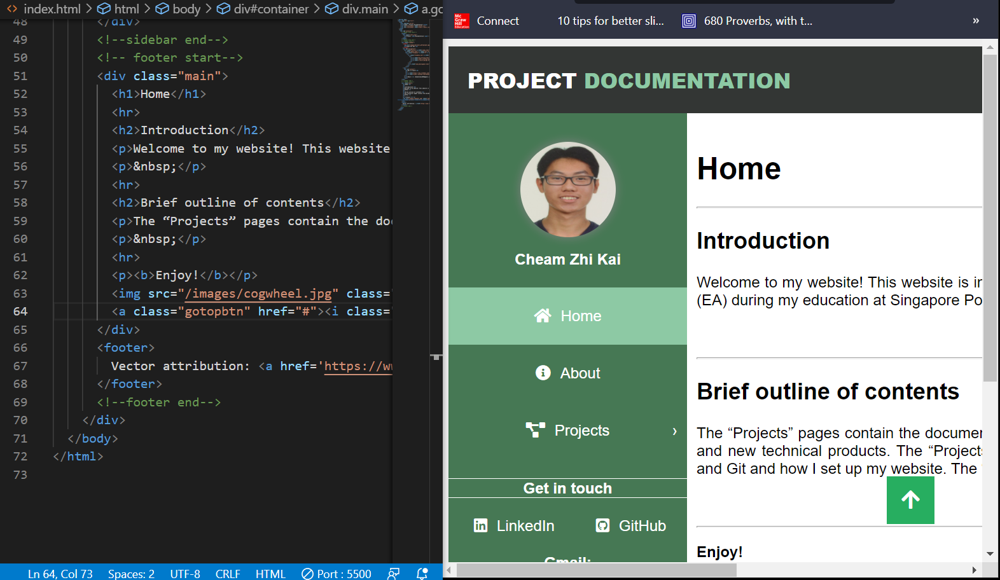
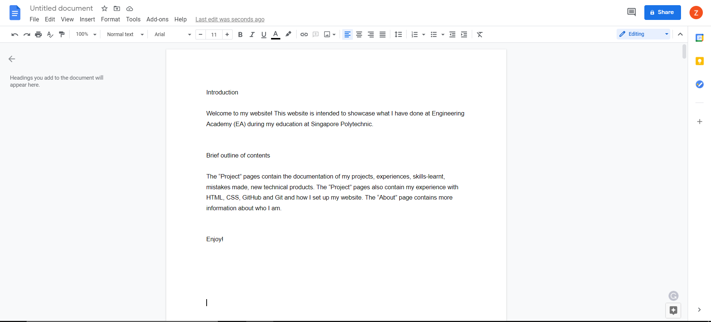
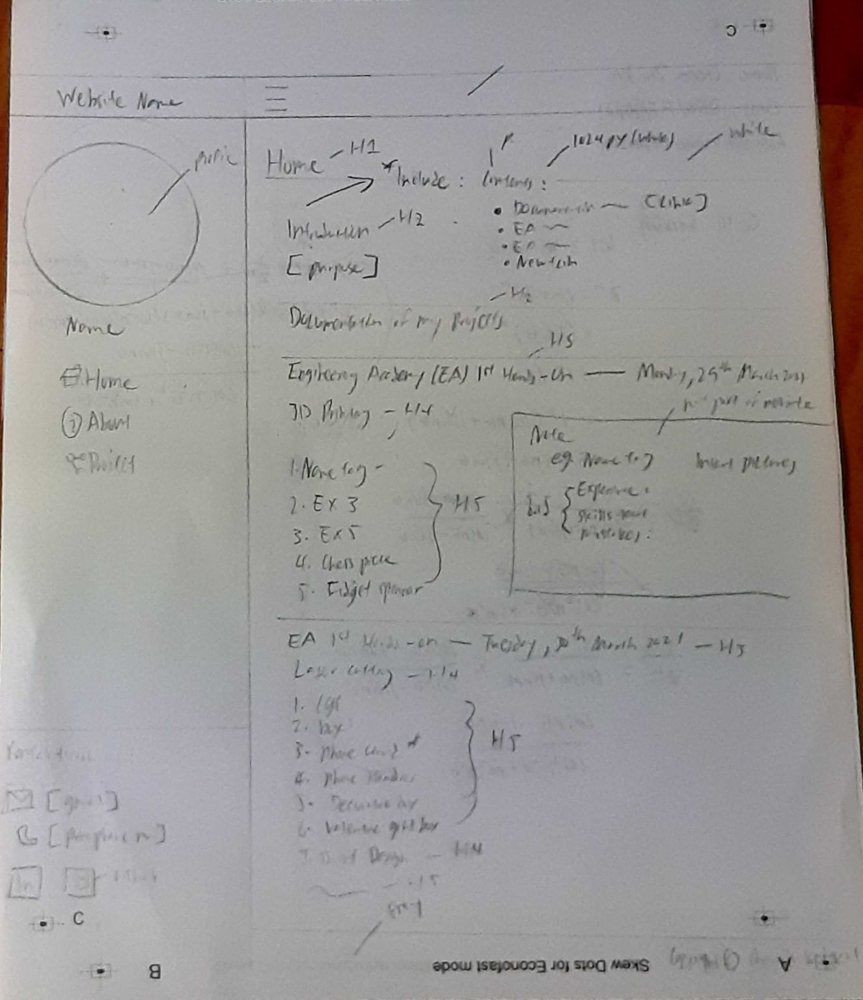

Web Development
Experience with HTML
(Overall design period: 29th March 2021 ~ 5th April 2021)
In this section, I have decided to split into 2 phases to better document my experience with using Hypertext Mark-Up Language (HTML). They are the “Learning” and “Execution” phase.
1. "Learning" phase:
2. "Execution" phase:
(Phase period: 29th March 2021 ~ 30th March 2021)
During this phase, I started to learn the basics of HTML. I watched Jake Wright’s "Learn HTML in 12 Minutes” and had understood the basic structure of HTML, indentations and the important tags such as, head, body, title and html.. Upon watching his video, I had applied what he had thought me by creating a test website on Visual Studio Code, a text editor.
Here is the HTML code that I had crafted while watching his video:
Here is how my test website looked like:
However, I did not stop there. I carried on and watch Jake Wright’s “Learn More HTML in 12 Minutes”. From there, I had learnt about the div element, classes, paragraphs, headings from h1 to h 6, and new tags like, span.
Again, I did not stop there and I continued to learn more about HTML by watching a playlist from LearnCode.academy on Youtube called “2019 Web Development Tutorials For Beginners”.
Through his playlist, I had learnt more HTML and Cascading Style Sheets(CSS) [discussed later]. Not only have I leant new tags like ul, ol, li, but also, tricks to speed up my web development process. For instance, I had learnt to use the live server to have a real-time view of my website as I code. Furthermore, I had also learnt to use 2 windows at the same time to look at my code as well as to look at the live view of my website.
Here is a screenshot of my screen when I open live server and open 2 separate windows:
(Phase period: 31st March 2021 ~ 5th April 2021)
During this phase, I started structuring the layout of this website. I used tags like, header and footer and classes such as .sidebar and .main. I had also plan on what content to included for the “Home” page followed by “About” page and the “Project” pages. After, I had come with with a layout for the “Home” page, using CSS (dicussed later), I begin to come up with the contents for the webpages. As the “Home” page is the first page to be displayed, I first focused on the content for that page.
To ensure that I do not make too many edits on my text editor for the contents and also not make too many grammatical errors, I structured and typed out the contents on Google Doc. As soon as I am done with organising and coming up with the content, I copied the text in the Google Doc and pasted it into the text editor.
Here is a screenshot of how I planned my content on Google Doc:
After I am done with the contents for the “Home” page, I moved on to the “About” page and finally the respective “Projects” pages.
In terms of making the web pages look needed throughout, I used the horizontal line element and other elements. I had also linked the list of contents so that the web page will scroll to the respective heading when the link is clicked.This idea came from a website for Digital Fabrication.
Overall, I feel that HTML is not too complicated as it sounds. Being familiar with the tags, classes, elements and the structure requires learning from online videos and trial and error.
Experience with CSS
(Overall design period: 30th March 2021 ~ 5th April 2021)
1. “Learning” phase:
2. “Execution” phase:
(Phase period: 30th March 2021 ~ 31th March 2021)
In this phase, I started learning about CSS by watching Jake Wright’s “Learn CSS in 12 Minutes”. After watching his video, I learnt the importance of sketching a layout of your webpage on a piece of paper before jumping straight into coding in CSS.This enables us to see the big picture of what we are trying to design.
Aside from learning the importance of sketching a layout on a piece of paper, I had also learnt how to use div elements and classes in CSS, the syntax and how to design using CSS properties such as text-align, float, padding and colour.
As mentioned earlier under “Experience with HTML - 1. “Learning” phase:” , I had also learnt more above CSS from “2019 Web Development Tutorials For Beginners”. I had learnt additional CSS properties like flexbox and how to create multiple web pages.
Once I had watched the above mentioned videos, I decided not to use Jake Wright’s web page template as I want to challenge myself by designing a new template.
Here is a sketch for the “Home” page:
(Phase period: 1st April 2021 ~ 5th April 2021)
Once I had come up with a sketch, I started working on the sidebars. As I am still new to CSS, I looked for tutorials on how to make a sidebar. From there, I found a Youtube video from "Code Snow" where they demonstrate to viewers how to design a decent looking web page using CSS.Instead of copying every single detail of the code, I made modifications throughout my code so that I get to learn something rather than blindly copying. Though the process is long, I eventually managed to design the sidebar, header and body of the web page through trial and error.
As for the footer and the usage of a div with the id being "content", it is being incorporated from Jake Wright’s website template.
To take a step further, I decided to design dropdowns for my sidebar. I learned to do so by watching a Youtube video from "JDB ART". This has been a bit of a challenge as the semantics of the code from that video is a bit different from mine and I had to spend some time to figure out how to accomplish designing the dropdowns. Eventually, I managed to successfully create the dropdowns. The reason why I wanted to design the dropdowns is not only because I want to improve the user experience, but also to keep the contents in the “Projects” pages organised.
Finally, I had included a scroll top button. Surprisingly, the process of creating the scroll top button was smooth thanks to a Youtube video from "Dark Code".
Once I am done with the layout design, I copy and paste the source code from index.html to other files.
Experience with Git
Unfortunately, I did not manage to use Git as I find that using GitHub Desktop is much more suitable for me. This is because I am not accustomed to writing on command lines and it is not very intuitive. Nevertheless, I will watch tutorials on how to use Git and document my experience when I am free.
Git vs. GitHub desktop:
As mentioned earlier, I personaly prefer using GitHub desktop than using Git. Using GitHub Desktop is much more easier due to its Graphical User Interface (GUI). Setting up requires cloning a chosen repository from GitHub. Before starting to edit files, make sure to always Fetch origin in case there are updates to the file. Then after editing, you have to Save your files so that the things you changed will be reflected. Then, type in a summary on the changes have you made and Commit to main. Once done, remember to Push origin or else the changes will not be updated. These are the few steps to follow when using GitHub Desktop for Version Control.
End